Chau Haus — Restaurant Management System
Built as a coursework project. A full-stack java web application that centralizes restaurant operations — reservations, seating, menus, and events — into one system serving both customers and staff. Customers browse events and submit reservation requests online; employees log in to manage operations and approve or deny requests, with automated email notifications keeping customers informed.
Restaurants often need to manage reservations, seating, menus, and special events while also providing customers with an easy way to book online. This project centralized those operations into a single web application that serves both customers and restaurant staff.
Customers can browse upcoming events and submit reservation requests through the public-facing website, while authorized employees can securely log in to manage restaurant operations such as events, tables and menus, and approve or deny reservations. Customers are then notified of their reservation status through automated email notifications.
The application follows an Onion Architecture with clear separation between presentation, business logic, and persistence. Controllers handle HTTP requests, services contain business logic, repositories manage persistence through Spring Data JPA, and MySQL stores application data. DTOs separate API models from persistence models, while Bean Validation ensures data integrity before persistence.
The domain model uses Spring Data JPA entity relationships to connect menus with menu items and reservations with tables and seating, while maintaining referential integrity across the schema.
Built full CRUD operations for restaurant events, including REST endpoints, business logic, validation, persistence, and the Thymeleaf views customers use to browse upcoming events.
Modeled menus and menu items through JPA entity relationships, with CRUD operations, DTO mapping, Bean Validation, REST endpoints, and the corresponding Thymeleaf pages for staff to manage them.
Designed and implemented the public landing page and overall application navigation, serving as the entry point for customers browsing events and submitting reservations.
A look at the two sides of the application: the public-facing customer flow for browsing and requesting a reservation, and the staff portal used to manage events, tables, seating, and menus.
Customer Flow
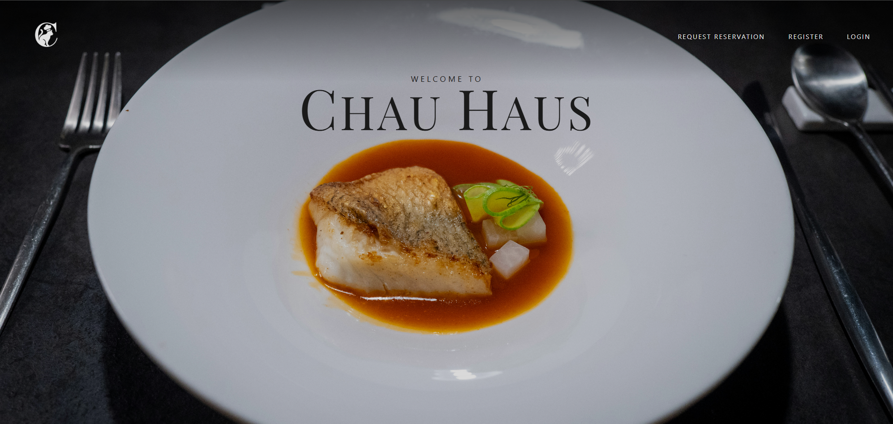
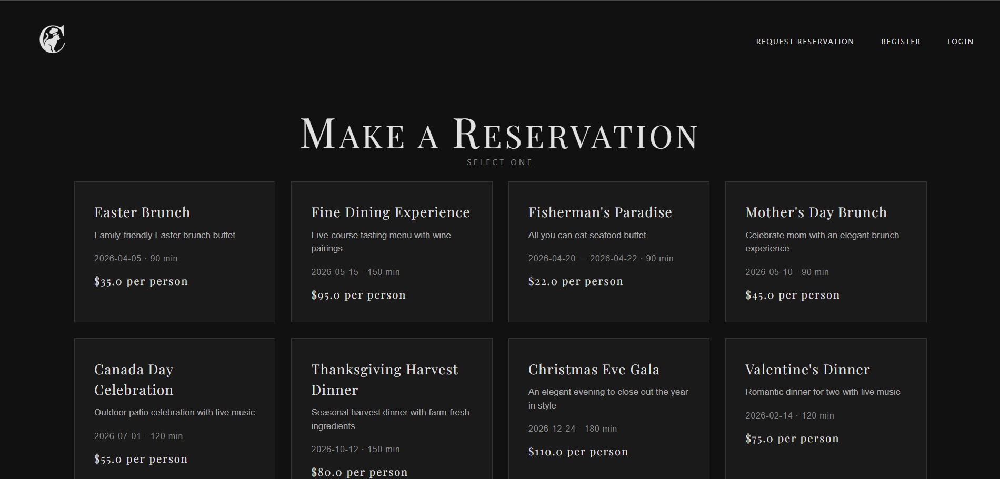
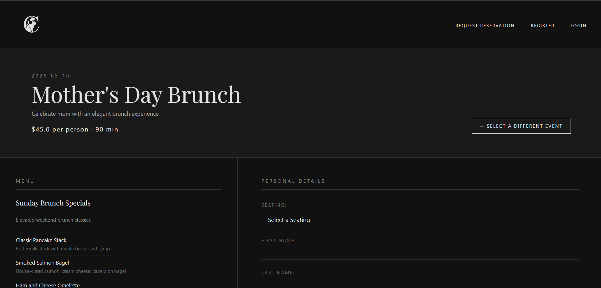
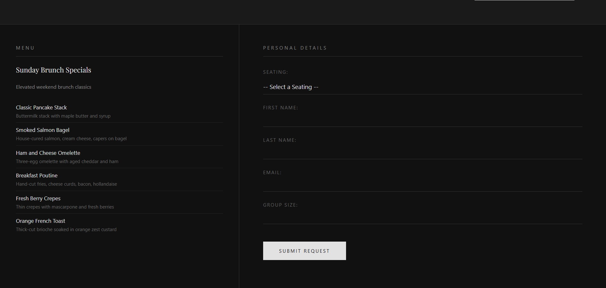
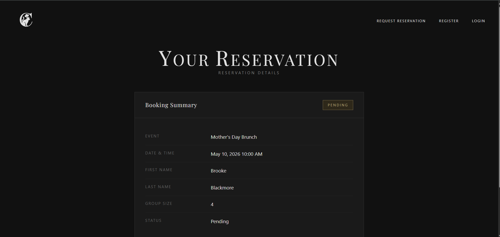
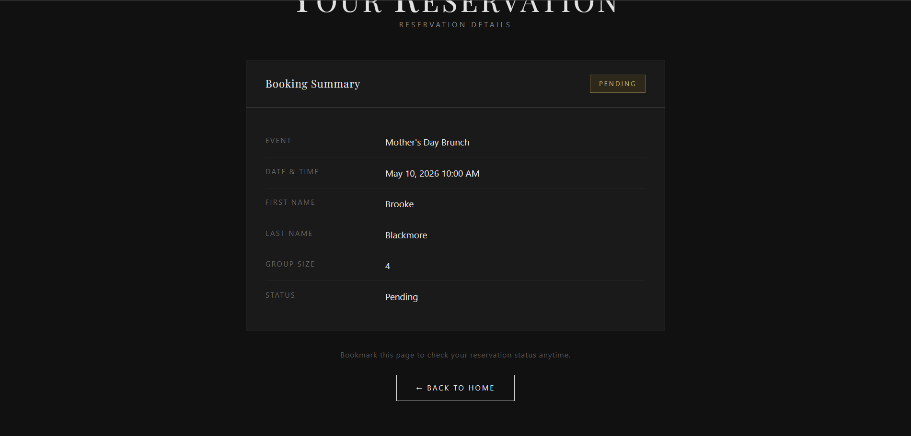
Staff Portal
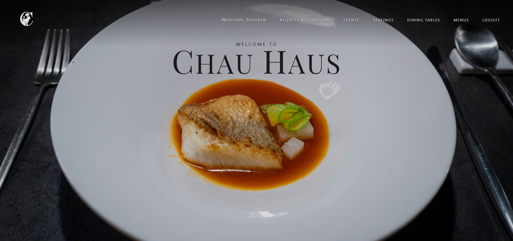
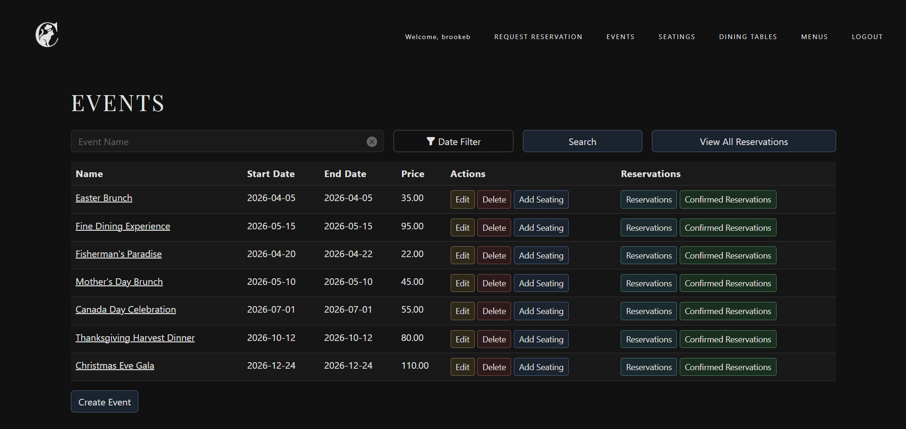
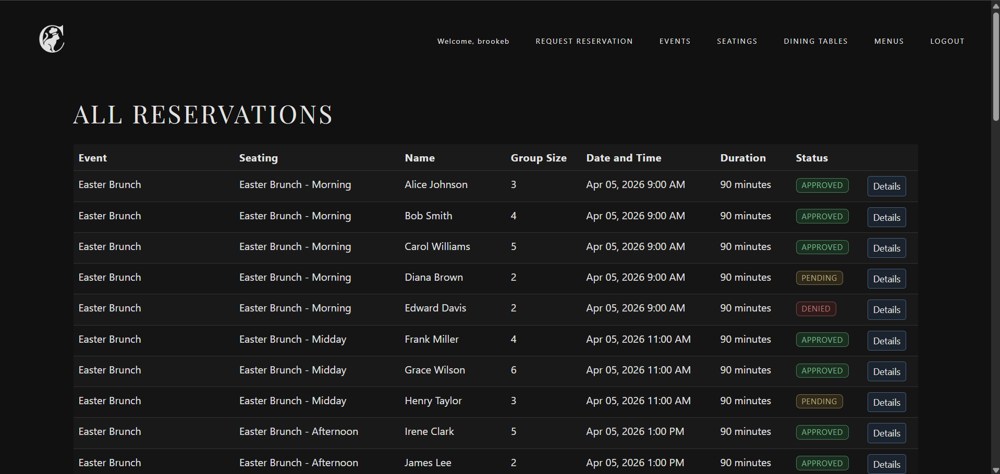
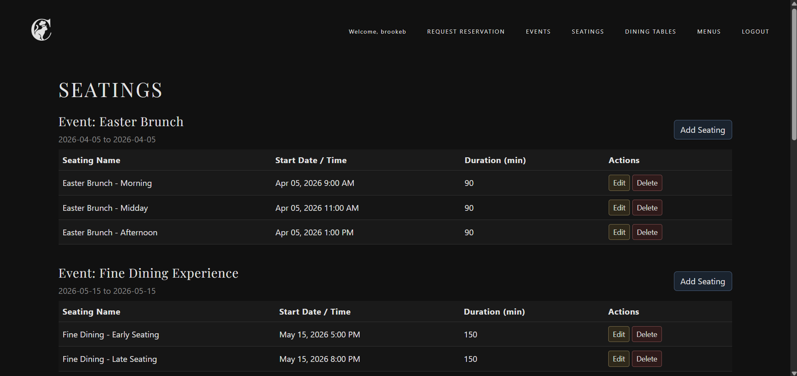
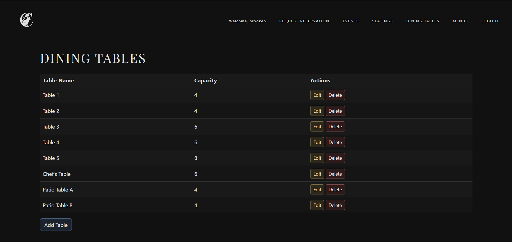
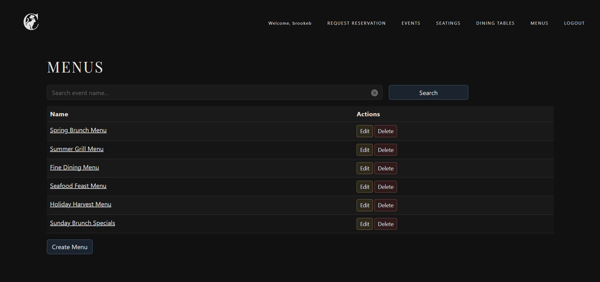
Built by a team of two. Development responsibilities were divided by feature area: I implemented Events, Menus, Menu Items, the Homepage, and related REST API functionality, while my teammate implemented Reservations, Tables, Seating, and the automated email notification system that informs customers when their reservation request is approved, denied, or remains pending. We collaborated using GitHub for version control and Jira for project planning and task tracking.